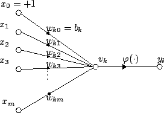

Week 11: intro to neural computation; neurons I
Lecture 11.1

Lecture 11.1: the basics

- [how everything computes]
- how a neuron computes
- what neurons compute natively (as opposed to virtually) (a partial list):
- vector projection (inner product)
- tuned receptive fields
- maps
HOW a neuron computes

A generally useful (but actually quite sketchy) summary of the
basic computation performed by a
neuron:
- multiply each incoming signal \(x_i\) by its synaptic
weight \(w_i\) (in the illustration,
\(k\) is an index over the neurons);
- sum all the resulting products;
- pass the sum through a nonlinearity
\(\varphi(\cdot)\), such as
the logistic sigmoid;
- compare the result to a threshold;
- if it exceeds the threshold,
then output an
action potential (spike).
WHAT neurons compute (the first example of many)

A pattern of connections between two bundles of wires can directly
implement vector PROJECTION.
Mathematically, projecting one N-dimensional
vector (a list of
N numbers; here, \([a,b,c,d]\)) onto another vector (here,
\([p_1, p_2, p_3, p_4]\)) is implemented by
the "dot product": elementwise multiplication of
corresponding elements of the two vectors, followed by a summation
of the results — just like the computation that neurons carry
out natively:
$$
x = [a,b,c,d] \cdot [p_1,p_2,p_3,p_4] = a p_1+b p_2+c p_3+d p_4
$$
To project onto another vector (as in the \(y\) output here), use
another set of neural
"weights" (here, \([q_1, q_2, q_3, q_4]\)).
WHAT is projection good for? Dimensionality reduction
A projection circuit can carry out "information-preserving"
reduction of dimensionality (recall the "curse of dimensionality"
from
Lecture 5.2):
|
 |
| a 2D dataset — think apples that vary in (1)
color and (2) mushiness |
the same data, mapped into 1D by Principal Component
Analysis (PCA) = projection onto the first principal direction |
neurons can reduce dimensionality NATIVELY, by doing what they do [= projection]
A neuron projects its input space onto the single dimension (single
number) represented by its output.
A set of K neurons fed by the same set of N input fibers project their common
N-dimensional input space onto the K-dimensional space
spanned by their outputs.
In this illustration, N=4 and K=3.
Dimensionality reduction is very broadly applicable, and often
indispensable, in cognitive computation.
a side remark on real brain circuitry

Some brain circuits are relatively well-ordered; for instance,
the parallel fibers
/ Purkinje cell circuit in the
cerebellar cortex.
However, even in such places there is much extra complexity that
is difficult to grasp intuitively. In the brain, mind-boggling
circuit complexity is the rule (evolution does not provide for
easy reverse engineering).
a side remark on vector space vs. neural activity space

An ordered list of the activities of a set of \(N\) neurons is commonly
thought of as spanning an \(N\)-dimensional
vector space.
However, this view has some serious limitations/flaws:
A sound approach to theorizing about the joint activity of a set of neurons
is via the concept of READ-OUT, to be discussed
on Thursday.
neuronal TUNING as a functional building block

Hubel and Wiesel (1962):
"simple cells" in the
primary visual cortex, V1 —
Top: the orientation selectivity of a simple cell. The
response of a cell to a bar of light is shown for different
locations and orientations of the bar relative to the receptive
field (RF). Note the spatially distinct ON and OFF regions
within the RF.
Bottom: Hubel and Wiesel's proposal of how the simple
cell's RF could be formed by combining
several center-surround RFs arranged along a line.
Does the existence of distinct ON and OFF regions serve a purpose?
Are such visually tuned cells "feature detectors" or ...?
to find out what tuning is for, must understand what it means to see
more visual tuning: complex cells in V1

Hubel and Wiesel (1962):
"complex cells" in
the primary visual cortex, V1 —
Top: the orientation selectivity of a complex cell. Note that,
unlike a simple cell, the complex cell does not care where exactly the
stimulus bar is within its RF, as long as it has the "correct"
orientation. Note the absence of spatially distinct ON and OFF
regions within the RF.
Bottom: Hubel and Wiesel's proposal of how the complex cell's
RF could be formed by combining several simple RFs arranged next to each
other.
Tian (2013): similar RF functionalities are found in the auditory
processing stream
Excitatory response profiles of monkey
A1 neurons in response to the onset and offset
of a band-pass noise (BPN) burst with varying
frequency. Green: ON
responses. Red: OFF responses.
(A) Response profiles of a typical type-S (simple-like)
cell. [The panels correspond to different
bandwidths of the BPN stimuli (in
octaves).] Note: ON- and
OFF-response profiles appear largely separated into distinct
frequency ranges — just like in the case of vision, the ON- and
OFF-response regions are spatially separate within the receptive
field.
(B) Three examples of type-C (complex-like) cells. In all cases,
the response profiles of ON and OFF responses significantly
overlap.
Consider also the analogy between retinotopy and tonotopy in sensory
world-to-brain mapping (illustrated and
discussed at length in the textbook).
MAPS and TUNING in other domains: spatial location [also ABSTRACT
STATE SPACES]
Behavioral evidence for cognitive maps,
from Cognitive maps in rats and men,
Edward C. Tolman, Psychological Review 55:189-208
(1948).
the spatial receptive field of a CA1 place cell

The rat's path has been recorded as
the rat explored the enclosure it was in.
The path is shown in gray; the black dots
mark the locations where the place cell fired.
tuning in "memory space" (Howard & Eichenbaum, 2014)
"Hippocampal place cells and time cells seem well-suited to
represent the spatial and temporal locations of distant stimuli in
order to support learning of [their] relationships. [...]
We suggest that there is a deep computational connection between
spatial and temporal coding in the hippocampus and that both serve
the overarching function of learning relationships between
stimuli: constructing a 'memory space'."
spatial RFs of place cells

Spatial firing distribution of 80 simultaneously recorded cells in
rat hippocampus, during unrestrained exploration of the familiar
half of the enclosure.
Dynamics of the hippocampal ensemble code for space,
M. A. Wilson and B. L. McNaughton, Science 261:1055-1058 (1993).
using place cells

- A typical place field in the familiar region.
- A place field that developed following exploration of the initially
unfamiliar region.
- Examples of rat trajectory, reconstructed from cell population
activity data (red: reconstructed; black: actual).
- Spatial distribution of reconstruction error.
reconstruction fidelity

- Mean error of trajectory reconstruction, plotted against the number
of cells included in the population vector (familiar enclosure).
- The number of cells required for a resolution of 1 cm, for
different integration times.
These cells clearly carry the information needed for locating the animal
(which the animal can use to locate itself). However, this information (i)
depends on the inputs and support from the rest of the brain and (ii) is in
turn used by the rest of the brain. The place cells is merely where it is
made explicit (a concept due to David Marr, 1982).
Consider also:
using place cells: from episodic memory to PROSPECTION
place cells that code bad places; REPLAY and prospection

Awake replay during sharp wave-ripples (SWRs) supports recall of fear
memory.
"Rats paused as they approached the
shock zone, and hippocampal SWRs occurred. During these SWRs, place cells
replayed the memory of the path previously associated with the aversive
experience in the shock zone. Place cell replay of paths extending to the
shock zone was reliably followed by animals actively turning and moving
away from the shock zone."
"In periods of rest, SWRs may allow animals to imagine where they plan to
go or where they want to avoid going or even to imagine an experience they
have never had."
Hippocampal awake replay in fear memory retrieval, Wu, C.,
Haggerty, D., Kemere, C. & Ji, D. Nat. Neurosci. 20, 571-580 (2017).
— computation by a brain vs. computation by a stomach
— sandboxing
3D place cells in free-flying bats (Yartsev & Ulanovsky, 2013)

(F) Telemetry system on a flying bat, drawn to scale.
(G) Neural traces (right) from the four channels of a tetrode,
recorded from bat
CA1 during one flight segment (left, gray; the magenta
portion corresponds to the duration of the neural traces shown on the
right).
an example place cell
(A) 3D representation of the neuron's spatial firing.
Top left:
Spikes (red dots) overlaid on bat's position (gray lines); shown also are
the spike waveforms on the four channels of the tetrode (mean ± SD).
Top right: 3D color-coded rate map, with peak firing rate
indicated.
Bottom:
Convex hull encompassing the neuron's place field (red polygon) and the
volume covered by the bat during flight (gray polygon).
3D space representation by place cells
3D space is encoded uniformly and nearly isotropically in the
hippocampus of flying bats.
(A to D) All the place fields recorded from the hippocampus of four
individual bats (different colors denote different neurons). Bats 1 to 3
(A) to (C) were tested in the cuboid-shaped flight-room, bat 4 (D) in the
cubic enclosure.
bats and rats and tricks of trade in navigation
Echolocation modes in bats (and a comparison with rat whisking).
From: Spatial cognition in bats and rats: from sensory
acquisition to multiscale maps and navigation. Maya
Geva-Sagiv, Liora Las, Yossi Yovel, and Nachum Ulanovsky
(2015). Nature Reviews Neuroscience 16:94.
bats and rats and tricks of trade in navigation
Egyptian fruit bats navigate dozens of kilometres to a specific
fruit tree, and return night after night to forage in the same
individual tree. The figure, part a, shows global position
system (GPS) tracking of a single bat over 7 consecutive
nights.
From: Spatial cognition in bats and rats: from sensory
acquisition to multiscale maps and navigation. Maya
Geva-Sagiv, Liora Las, Yossi Yovel, and Nachum Ulanovsky
(2015). Nature Reviews Neuroscience 16:94.
bats and rats and tricks of trade in navigation

a, A hypothesis re how the home range of a
bat or a rat may be represented on multiple spatial scales:
a higher-resolution representation (smaller place fields) for
more important locations such as the cave or burrow, or the
feeding tree, and a lower-resolution representation (larger
place fields) at less important locations such as at a 500‑m
altitude in mid-flyway. b, c, d: data.
From: Spatial cognition in bats and rats: from sensory
acquisition to multiscale maps and navigation. Maya
Geva-Sagiv, Liora Las, Yossi Yovel, and Nachum Ulanovsky
(2015). Nature Reviews Neuroscience 16:94.
tuning and MAPS of abstract (non-spatial) feature dimensions

Target range maps in different bat species (Kössl, 2014).
Left: representative spectrograms of echolocation calls.
Middle: brain overview with the position of auditory cortex.
Right: detailed view of chronotopic maps within auditory
cortex.
Blue: target range computing areas;
White arrows: the direction of of decreasing echo delay.
Black arrows: increasing characteristic frequency in tonotopic
areas.
[FM = frequency modulation; CF = characteristic frequency]
What are orderly sensory maps good for?
[Think about how similarity-sensitive
use/read-out of a representation is facilitated by a
spatially ordered map.]
place cells and social behavior (Danjo et al., 2018)

"We investigated neuronal representations of other animals’ locations in the
dorsal
CA1 region of the hippocampus with an observational T-maze task in which one
rat was required to observe another rat’s trajectory to
successfully retrieve a reward.
Information reflecting the spatial location of both the self and the other was jointly and
discretely encoded by
CA1 pyramidal cells in the observer rat. A subset of CA1 pyramidal
cells exhibited spatial receptive fields that were identical for
the self and the other. These findings demonstrate that
hippocampal spatial representations include dimensions for both
self and nonself."
— Danjo et al. (2018). Spatial representations of self and
other in the hippocampus. Science 359:213-218.
Again, these cells is merely where the social location
information is MADE EXPLICIT (a concept due to David Marr,
1982).
place cells and social behavior (Omer et al., 2018)
"We designed a spatial observational learning
task, in which an observer bat mimicked a demonstrator bat while we recorded
hippocampal
dorsal-CA1 neurons from the observer bat.
A neuronal subpopulation represented the position of the other
bat, in
allocentric coordinates. About half of these
“social place cells” represented also the observer’s own
position — that is, were place cells. The representation of the
demonstrator bat did not reflect self-movement or trajectory
planning by the observer. Some neurons represented also the
position of inanimate moving objects; however, their
representation differed from the representation of the
demonstrator bat. This suggests a role for hippocampal
CA1 neurons in social-spatial cognition."
— David Omer, Shir Maimon, Liora Las, Nachum
Ulanovsky. (2018). Social place-cells in the
bat hippocampus. Science 359:218-224.
place cells and social behavior (Omer et al., 2018)

"Locations of peak firing for all the significant maps for place
cells (red dots, n = 371 cells × directions), and social
place-cells (blue dots, n = 76 cells × directions); cells that
had significant tuning in both directions were depicted
twice. [...] Dots were randomly jittered by up to ±5 cm (half
bin) for display purposes."
— Omer et al. (2018). Social place-cells in the
bat hippocampus. Science 359:218-224.
place cells, path replay, and reinforcement learning (Ambrose et al., 2016)
- Reverse, but not
forward, replays are sensitive to reward
context
- Sharp Wave Ripples (SWRs) and replay
rates adaptively code the given range of reward
magnitudes
- Reverse replay rates are altered by changes in reward from
previous experience
- Reverse replay rates reflect relative reward magnitudes in
the same experience
— R. Ellen Ambrose, Brad E. Pfeiffer, David
J. Foster. (2016). Reverse Replay of Hippocampal
Place Cells Is Uniquely Modulated by Changing
Reward. Neuron 91:1124-1136.
lessons?
So, what is it that neurons compute natively?
-
Do linear algebra (vector projection / inner product, matrix
multiplication).
-
Implement dimensionality reduction (from many dimensions to one),
including similarity-preserving DR by random projections (recall
Lecture 5.2).
-
Perform function approximation (when arranged in multilayer networks).
-
Respond selectively (exhibit tuning) and thus serve as
landmarks/prototypes in a similarity-based representation scheme,
a.k.a. the Chorus Transform (again, Lecture 5.2).
-
Form spatial maps, presumably to facilitate navigation, episodic
memory and prospection, and social cognition.
-
Form abstract maps (retinotopic, tonotopic, chronotopic, etc.),
presumably to facilitate similarity-based readout.